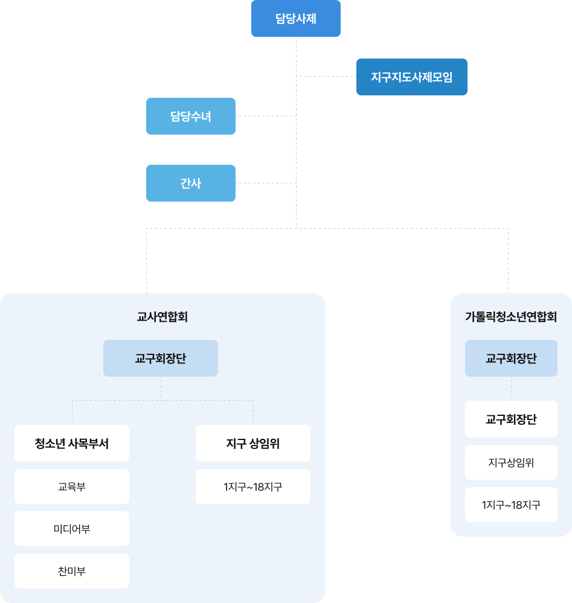

중고등부
청소년 신앙교육 교사와 청소년 사도의 양성, 청소년 사목 지원체계를 확립하고 활성화하여 청소년을 주체로 한 청소년 및 사회 복음화를 실현하고자 한다.
청소년 신앙교육 교사 양성
청소년 사도의 양성
청소년 사목 지원체계의 확립과 활성화
| 과제 | 실천요강 |
|---|---|
| 교사 양성교육 | 1. 전문 교사양성 프로그램 설립 |
| 2. 수준별, 분야별 교사양성체계 획립 및 수준별 분야별 교육실시 | |
| 청소년 사도양성 | 1. 다양한 학생자치활동 방식의 도입 및 개발 |
| 2. 일반 본당 청소년들 대상으로 사도 양성 이후 조직화 | |
| 3. 청소년 사도양성의 대 사회적 기능 강화 |
